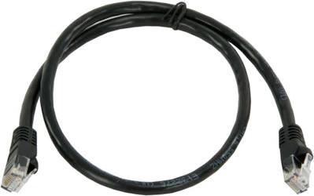
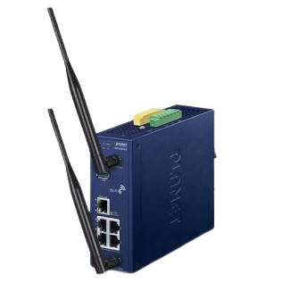
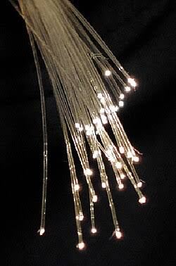
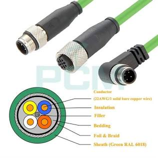
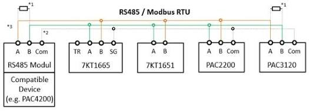
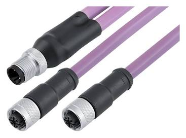
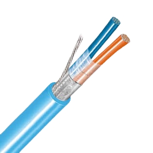

Ethernet

A rede de cabos dos computadores de escritório. É a base de quase todas as outras redes desta página.
Cabo: Cabo de par trançado (fios enrolados dois a dois, que reduzem ruído). Os tipos mais comuns são Cat5e, Cat6 e Cat6a.
Conector: RJ45 (o plugue de internet). Na fábrica, usa-se o M12, que é redondo e rosqueado.
Formato da rede: Estrela: todos os aparelhos ligam num switch central.
Energia no mesmo cabo: Pode levar energia pelo mesmo cabo (PoE), por exemplo para câmeras e telefones.
Como evitam confusão: Antigamente, quem falasse ao mesmo tempo causava colisão. Hoje o switch organiza e evita isso.
Velocidade: De 10 Mbps até 10 Gbps ou mais.
Distância máxima: 100 metros por cabo.
Tempo de resposta garantido: Não. O tempo de resposta pode variar.
Onde é usada: Escritórios, computadores, servidores e base para a rede da fábrica.
Wi-Fi

A rede sem fio, que usa ondas de rádio no lugar de cabos.
Cabo: Não tem cabo. Usa ondas de rádio em 2,4, 5 ou 6 GHz.
Conector: Só as antenas. O roteador (ponto de acesso) liga ao resto da rede por cabo RJ45.
Formato da rede: Estrela: os aparelhos falam com um ponto de acesso. Também existe a versão em malha, com vários pontos.
Energia no mesmo cabo: O roteador pode ser alimentado pelo cabo de rede. Os aparelhos usam bateria ou tomada.
Como evitam confusão: Cada aparelho ouve se o canal está livre antes de falar (CSMA/CA).
Velocidade: De 11 Mbps nos modelos antigos até mais de 9 Gbps nos novos.
Distância máxima: Cerca de 30 a 50 m dentro de prédios e 100 m ao ar livre.
Tempo de resposta garantido: Não. Paredes e outros sinais atrapalham.
Onde é usada: Notebooks, celulares, tablets e robôs que se movem pela fábrica.
Fibra óptica

Um fio de vidro fino que leva dados com pulsos de luz.
Cabo: Fibra de vidro. A multimodo tem núcleo mais grosso e serve para curtas distâncias. A monomodo tem núcleo bem fino e vai muito longe.
Conector: LC, SC, ST e FC, que são plugues pequenos e encaixáveis.
Formato da rede: Ponto a ponto, estrela ou anel.
Energia no mesmo cabo: Não leva energia. Cada ponta precisa de tomada própria.
Como evitam confusão: Usa o protocolo da rede que carrega, quase sempre Ethernet, sem colisões.
Velocidade: De 100 Mbps a 400 Gbps ou mais.
Distância máxima: Multimodo: de 300 m a 2 km. Monomodo: de 10 km a mais de 80 km.
Tempo de resposta garantido: Depende do protocolo, mas a luz quase não atrasa.
Onde é usada: Liga prédios, painéis e salas de controle. Não sofre com ruído elétrico e é segura em locais com risco de explosão.
Profinet

Ethernet própria para fábricas, criada pela Siemens e pela entidade PI.
Cabo: Cabo Ethernet verde, blindado (com capa que bloqueia ruído).
Conector: RJ45 e M12 de 4 pinos.
Formato da rede: Estrela, linha, árvore ou anel.
Energia no mesmo cabo: Não. Os módulos precisam de 24 V à parte.
Como evitam confusão: O controlador (CLP) fala com os módulos de forma cíclica. Pacotes importantes ganham prioridade.
Velocidade: 100 Mbps.
Distância máxima: 100 m por trecho de cabo.
Tempo de resposta garantido: Sim. Respostas entre 1 e 10 ms, e até menos de 0,1 ms na versão IRT.
Onde é usada: Liga CLPs, módulos de entrada e saída e inversores.
EtherNet/IP
Ethernet de fábrica criada pela ODVA e muito usada com equipamentos Rockwell/Allen-Bradley. Não tem relação com o IP de endereço.
Cabo: Cabo Ethernet comum, de preferência blindado.
Conector: RJ45 e M12.
Formato da rede: Estrela, linha ou anel.
Energia no mesmo cabo: Não. Precisa de 24 V à parte.
Como evitam confusão: Os aparelhos publicam seus dados e quem precisa recebe. Tudo passa pela Ethernet.
Velocidade: 10, 100 ou 1000 Mbps.
Distância máxima: 100 m por trecho de cabo.
Tempo de resposta garantido: Quase. Boa para a maioria das máquinas, com respostas de 1 a 10 ms.
Onde é usada: Controle de máquinas e linhas de produção.
Modbus RTU

Um dos protocolos mais antigos e simples. Um mestre pergunta e o escravo responde.
Cabo: Dois fios trançados e blindados no padrão RS-485.
Conector: Bornes de parafuso ou D-Sub de 9 pinos.
Formato da rede: Barramento: um cabo único passa por todos os aparelhos, com resistor de 120 Ω nas pontas.
Energia no mesmo cabo: Não.
Como evitam confusão: Mestre-escravo: só fala quem foi perguntado. Um mestre atende até 247 escravos.
Velocidade: De 1,2 a 115,2 kbps. O mais usado é 9,6 kbps.
Distância máxima: Até 1200 m.
Tempo de resposta garantido: Sim, mas o tempo cresce conforme o número de aparelhos.
Onde é usada: Medidores de energia, inversores de frequência e controladores de temperatura.
Profibus DP

Rede rápida por fios para ligar CLP a módulos e inversores.
Cabo: Par trançado blindado, de cor roxa, no padrão RS-485.
Conector: D-Sub de 9 pinos com chave de terminação. Também existe o M12.
Formato da rede: Barramento: um cabo passa por todos. Terminadores nas duas pontas.
Energia no mesmo cabo: Não.
Como evitam confusão: Passa um bastão (token) entre os mestres, e cada mestre pergunta aos escravos.
Velocidade: De 9,6 kbps a 12 Mbps.
Distância máxima: De 1200 m (lento) a 100 m (rápido), até 32 aparelhos por trecho.
Tempo de resposta garantido: Sim. Respostas entre 1 e 10 ms.
Onde é usada: Fábricas e linhas de montagem.
Profibus PA

Versão do Profibus feita para indústrias de processo, como química e petróleo, onde pode haver gás inflamável.
Cabo: Par trançado blindado, de cor azul.
Conector: Bornes e M12, ligados por um acoplador ao Profibus DP.
Formato da rede: Linha, árvore ou estrela.
Energia no mesmo cabo: Sim. Dados e energia vão no mesmo par de fios.
Como evitam confusão: Mestre-escravo, ligado ao DP.
Velocidade: 31,25 kbps.
Distância máxima: Até 1900 m, ou cerca de 1000 m em áreas com risco de explosão.
Tempo de resposta garantido: Sim, mas é lenta, na casa de centenas de ms.
Onde é usada: Sensores de pressão, vazão e temperatura em refinarias e indústrias químicas. A segurança intrínseca evita faíscas.
HART e WirelessHART
O HART manda dados digitais pelo mesmo fio do sinal 4-20 mA dos sensores. O WirelessHART faz o mesmo sem fios.
Cabo: HART: o próprio par do laço 4-20 mA. WirelessHART: ondas de rádio.
Conector: Bornes do instrumento. O WirelessHART tem antena.
Formato da rede: HART: ponto a ponto ou até 15 aparelhos. WirelessHART: malha, com os aparelhos repassando sinal uns aos outros.
Energia no mesmo cabo: HART: o próprio laço alimenta. WirelessHART: bateria.
Como evitam confusão: HART: mestre pergunta e instrumento responde. WirelessHART: cada aparelho tem horário marcado para falar.
Velocidade: HART: 1200 bps. WirelessHART: 250 kbps.
Distância máxima: HART: cerca de 1500 m. WirelessHART: cerca de 100 m entre aparelhos.
Tempo de resposta garantido: Não. A resposta leva cerca de meio segundo ou mais.
Onde é usada: Configurar, calibrar e diagnosticar instrumentos de processo.
Foundation Fieldbus H1
Rede de campo para processo em que os próprios instrumentos fazem parte do controle.
Cabo: Par trançado blindado.
Conector: Bornes, M12 e caixas de junção.
Formato da rede: Um tronco principal com derivações curtas.
Energia no mesmo cabo: Sim. Dados e energia vão no mesmo par.
Como evitam confusão: Um coordenador (LAS) marca a hora de cada um falar, como um professor chamando a chamada.
Velocidade: 31,25 kbps.
Distância máxima: Até 1900 m, e até 9,5 km com repetidores. Até 32 aparelhos.
Tempo de resposta garantido: Sim. Tudo é agendado.
Onde é usada: Indústrias químicas, petroquímicas e de papel.
Foundation Fieldbus HSE
A versão Ethernet rápida do Fieldbus. Liga várias redes H1 ao sistema de controle.
Cabo: Cabo Ethernet ou fibra.
Conector: RJ45 ou conectores de fibra.
Formato da rede: Estrela ou anel.
Energia no mesmo cabo: Não.
Como evitam confusão: Ethernet comum, com um aparelho (linking device) que liga o H1 ao HSE.
Velocidade: 100 Mbps.
Distância máxima: 100 m em cobre e cerca de 2 km em fibra.
Tempo de resposta garantido: Não de forma estrita.
Onde é usada: Espinha dorsal que reúne as redes H1.
AS-i
Rede de dois fios que liga sensores e botões simples, para substituir um monte de cabos.
Cabo: Cabo amarelo achatado de 2 fios, sem blindagem.
Conector: Conexão por perfuração: o conector fura a capa e encosta nos fios.
Formato da rede: Qualquer formato: linha, estrela, árvore ou anel.
Energia no mesmo cabo: Sim. O cabo amarelo leva 24 V e dados juntos.
Como evitam confusão: Mestre-escravo: um mestre pergunta a cada escravo em sequência.
Velocidade: 167 kbps.
Distância máxima: 100 m, e até 300 m com repetidores. Até 62 escravos.
Tempo de resposta garantido: Sim. Ciclo de 5 a 10 ms.
Onde é usada: Sensores, botões e válvulas no nível mais baixo da máquina.
IO-Link
Liga um sensor ou atuador inteligente por um cabo simples, comum e curto.
Cabo: Cabo comum de 3 a 5 fios, sem blindagem.
Conector: M12 de 4 ou 5 pinos, ou M8.
Formato da rede: Ponto a ponto. Cada sensor tem sua porta no mestre.
Energia no mesmo cabo: Sim. O cabo leva 24 V para o sensor.
Como evitam confusão: Mestre-escravo: o mestre sempre começa a conversa.
Velocidade: Até 230,4 kbps.
Distância máxima: 20 m por sensor.
Tempo de resposta garantido: Sim. Ciclos a partir de 0,4 ms.
Onde é usada: Sensores inteligentes que enviam também diagnósticos e permitem ajustes pelo CLP.
DeviceNet
Rede de fábrica feita em cima do CAN, o barramento dos carros.
Cabo: Cabo de 5 fios: 2 de dados, 2 de energia e a malha.
Conector: Bornes e conectores mini ou micro de 5 pinos.
Formato da rede: Tronco com derivações.
Energia no mesmo cabo: Sim. O cabo leva 24 V.
Como evitam confusão: Se dois falam juntos, vence quem tem prioridade maior (arbitragem), sem perder a mensagem.
Velocidade: 125, 250 ou 500 kbps.
Distância máxima: Até 500 m (lento) e 100 m (rápido). Até 64 nós.
Tempo de resposta garantido: Sim, por prioridade.
Onde é usada: Sensores, botoeiras e inversores em máquinas.
EtherCAT
Ethernet de altíssima velocidade. Um único pacote passa por todos os aparelhos, que leem e escrevem nele em tempo real.
Cabo: Cabo Ethernet Cat5e ou fibra.
Conector: RJ45, M8 e M12.
Formato da rede: Linha, anel, árvore ou estrela.
Energia no mesmo cabo: Normalmente não. A versão EtherCAT P leva energia no mesmo cabo.
Como evitam confusão: O mestre envia um pacote e cada escravo lê e escreve nele na passagem.
Velocidade: 100 Mbps.
Distância máxima: 100 m entre aparelhos, e até 65 535 aparelhos.
Tempo de resposta garantido: Sim. Ciclos a partir de 0,1 ms.
Onde é usada: Robôs, máquinas CNC e controle de movimento preciso.
Modbus TCP
O Modbus que roda sobre Ethernet comum.
Cabo: Cabo Ethernet comum.
Conector: RJ45 e M12.
Formato da rede: Estrela ou linha.
Energia no mesmo cabo: Não.
Como evitam confusão: Cliente pergunta, servidor responde, pela rede Ethernet comum.
Velocidade: 10, 100 ou 1000 Mbps.
Distância máxima: 100 m por trecho de cabo.
Tempo de resposta garantido: Não. Responde em milissegundos ou dezenas de ms.
Onde é usada: Ligar CLPs, supervisórios e medidores.
CANopen
Protocolo de máquinas feito em cima do CAN, o barramento de comunicação dos carros.
Cabo: Par trançado com fio terra e malha.
Conector: D-Sub de 9 pinos, M12 de 5 pinos ou bornes.
Formato da rede: Barramento com resistor de 120 Ω em cada ponta.
Energia no mesmo cabo: Pode levar, mas é opcional.
Como evitam confusão: Quando dois falam juntos, vence quem tem prioridade maior, sem perder a mensagem.
Velocidade: De 10 kbps a 1 Mbps.
Distância máxima: De 25 m (rápido) a 5 km (muito lento).
Tempo de resposta garantido: Sim, por prioridade.
Onde é usada: Máquinas móveis, drives de motor e equipamentos médicos.
MQTT
Um sistema de mensagens leve, parecido com seguir um canal. Quem publica manda, quem assinou recebe.
Cabo: Não tem cabo próprio. Usa a rede que existir: Ethernet, Wi-Fi ou celular.
Conector: Os da rede escolhida, como o RJ45.
Formato da rede: Estrela, com um servidor central (broker) no meio.
Energia no mesmo cabo: Não se aplica.
Como evitam confusão: Quem envia publica num tópico. O broker entrega a todos que assinaram.
Velocidade: Depende da rede. É bem leve.
Distância máxima: Depende da rede.
Tempo de resposta garantido: Não.
Onde é usada: Levar dados da fábrica para a nuvem (Indústria 4.0 e IoT). A segurança usa TLS.
OPC UA
Uma língua comum para máquinas de marcas diferentes trocarem dados e se entenderem.
Cabo: Não tem cabo próprio. Usa a rede existente.
Conector: Os da rede escolhida.
Formato da rede: Cliente e servidor, ou publicador e assinante.
Energia no mesmo cabo: Não se aplica.
Como evitam confusão: Cliente pede e servidor responde, com criptografia e certificados de segurança.
Velocidade: Depende da rede.
Distância máxima: Depende da rede.
Tempo de resposta garantido: Não, mas pode ser com TSN.
Onde é usada: Liga máquinas aos sistemas da empresa (MES, ERP) e à nuvem.
CC-Link
Rede industrial da Mitsubishi. Existe a versão por fios (RS-485) e a versão Ethernet (CC-Link IE).
Cabo: Fios trançados blindados. O CC-Link IE usa cabo Ethernet Cat5e.
Conector: Conector de 5 pinos, e RJ45 no IE.
Formato da rede: Barramento. O IE aceita linha, estrela e anel.
Energia no mesmo cabo: Não.
Como evitam confusão: Mestre pergunta a todos (broadcast). No IE, um bastão (token) passa de um para outro.
Velocidade: De 156 kbps a 10 Mbps. O IE chega a 1 Gbps.
Distância máxima: De 1200 m (lento) a 100 m (rápido). Até 64 estações.
Tempo de resposta garantido: Sim.
Onde é usada: Máquinas e linhas de produção, principalmente com CLP Mitsubishi.